Abstract
Large Audio Language Models (LALMs) integrate audio encoders with pretrained Large Language Models to perform complex multimodal reasoning tasks. While these models can generate Chain-of-Thought (CoT) explanations, the faithfulness of these reasoning chains remains unclear. In this work, we propose a systematic framework to evaluate CoT faithfulness in LALMs with respect to both the input audio and the final model prediction. We define three criteria for audio faithfulness: hallucination-free, holistic, and attentive listening. Our code and experiments suggest a potential multimodal disconnect: reasoning often aligns with the final prediction but is not always strongly grounded in the audio.
Audio Interventions
We propose three different audio interventions in order to measure the capability of LALMs to listen attentively, wholistically, and without hallucinations.
Masking (Wholistic Listening)
Combined Masking Accuracy and Consistency across Masking Ratios.
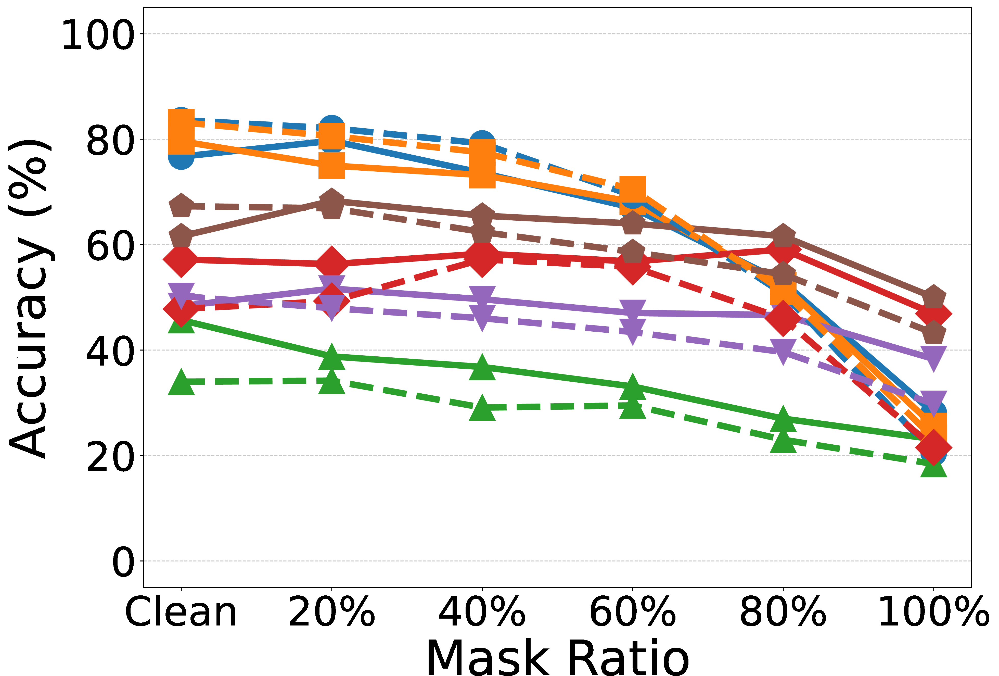
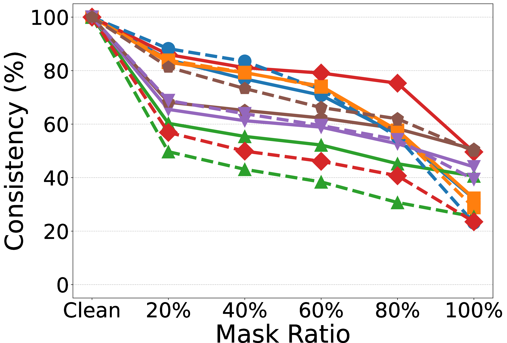
Noise (Hallucination-free listening)
Combined Noise Accuracy and Consistency across SNR levels.
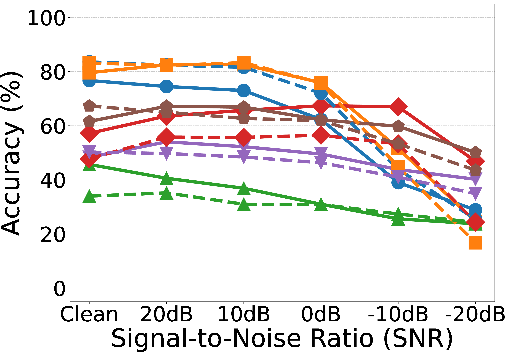
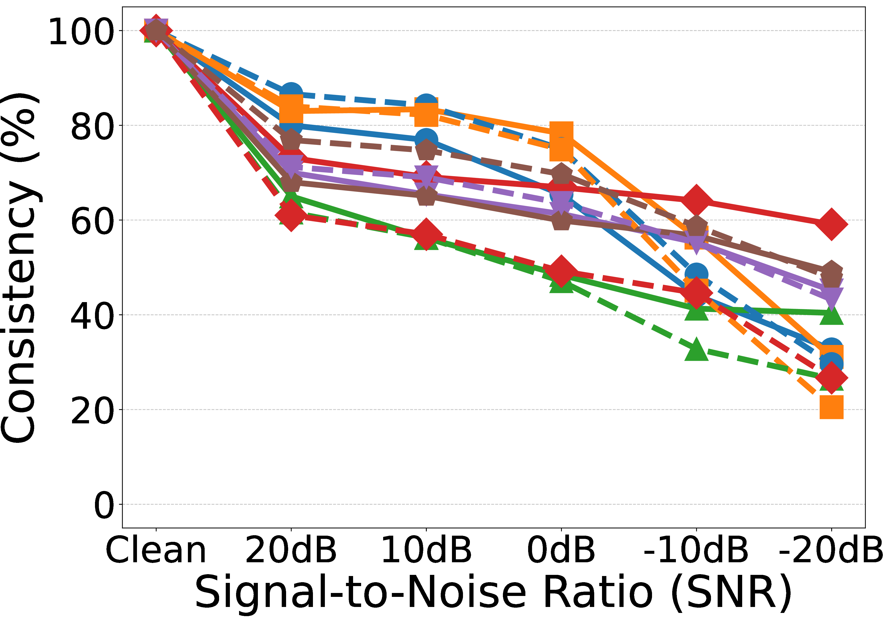
Adversarial (Attentive Listening)
Adversarial accuracy and consistency evaluated on AF3 and Qwen2.5-Omni.
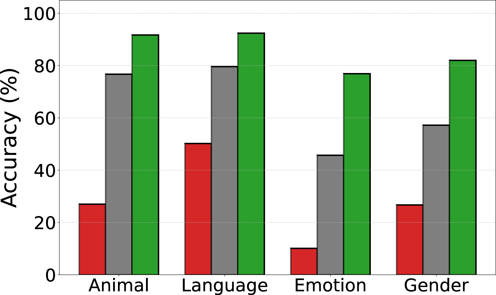
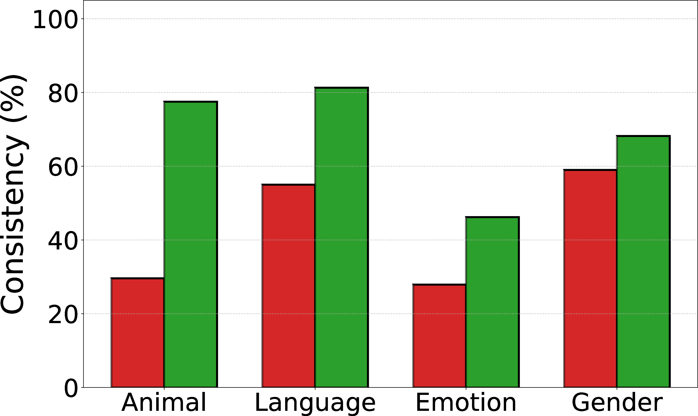
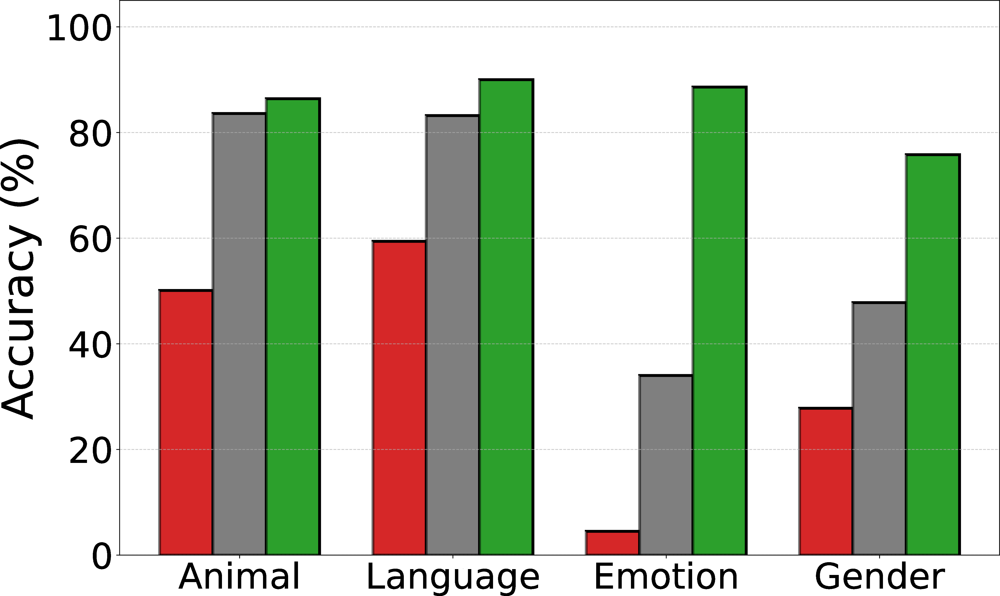
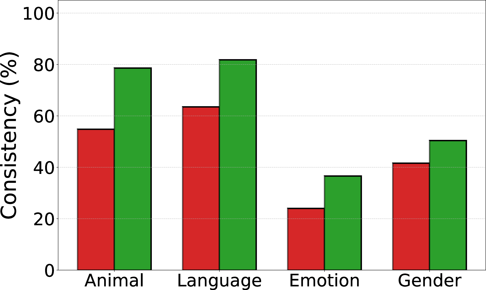
Chain-of-Thought (CoT) Interventions
We analyze faithfulness by systematically modifying the generated CoTs and observing how these changes affect model accuracy and predictions. The following visualizations demonstrate the impact of filler token injection and mistake addition based on Mistral perturbations.
Random Partial Filler Text (Lorem)
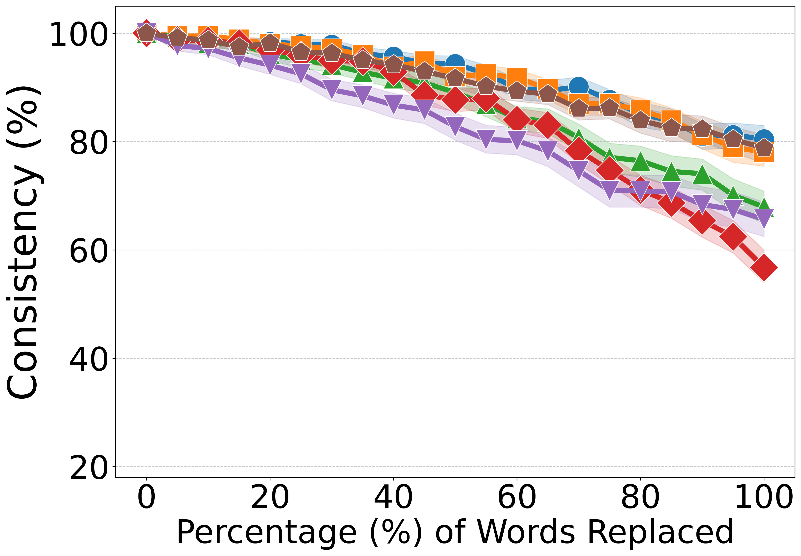

Adding Mistakes (External Mistral Perturbation)
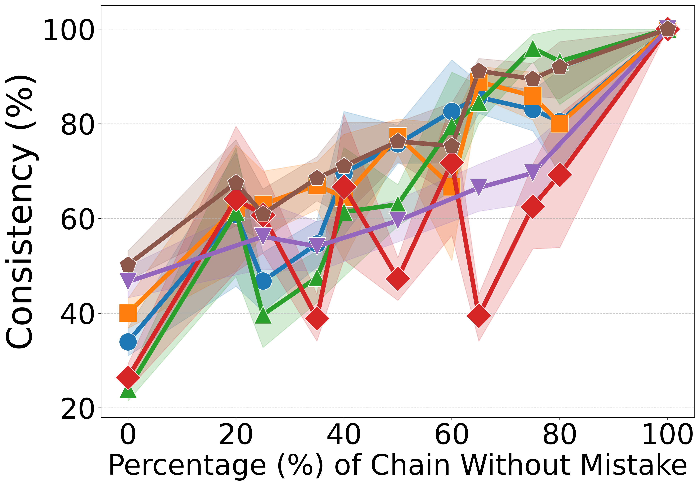
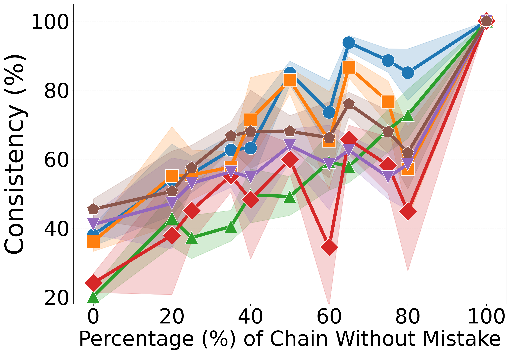
Early Answering

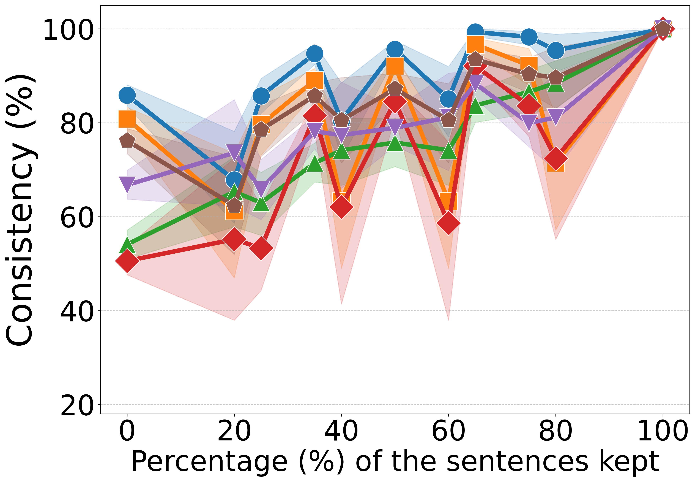
Paraphrasing (External Mistral)
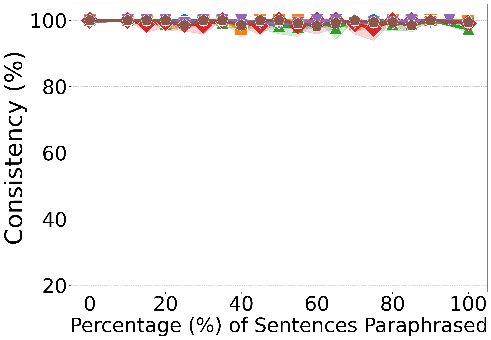
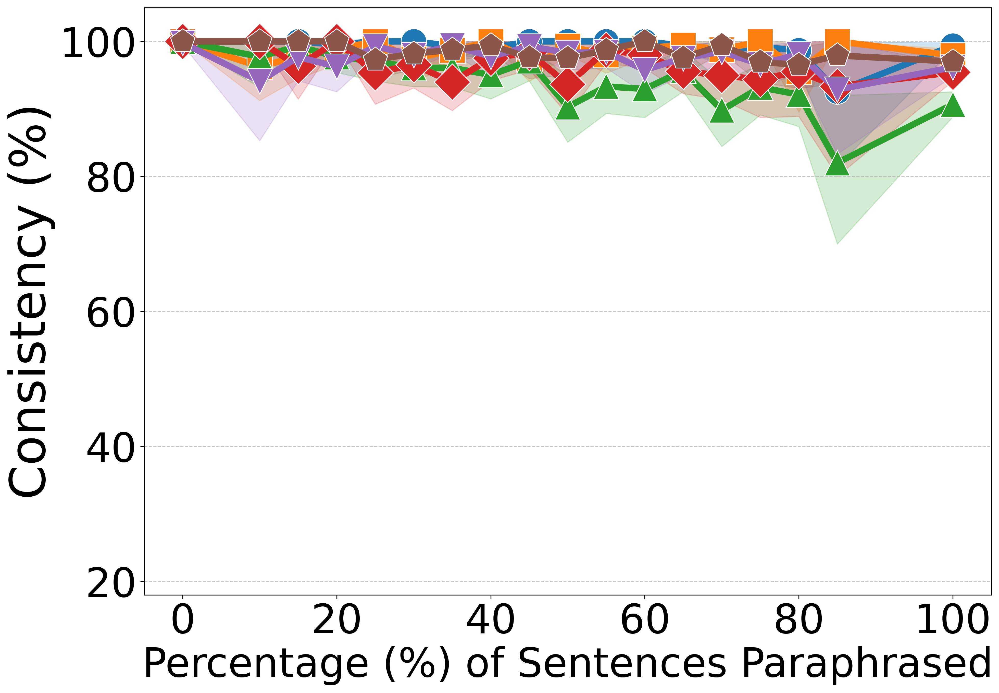